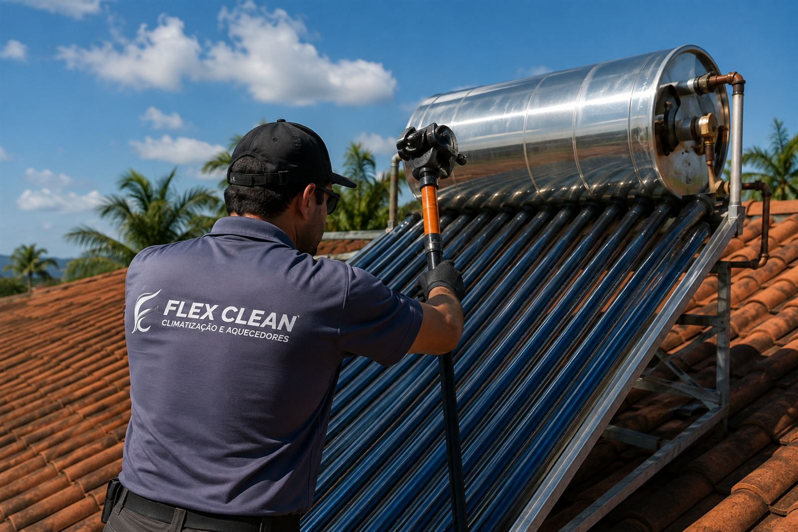
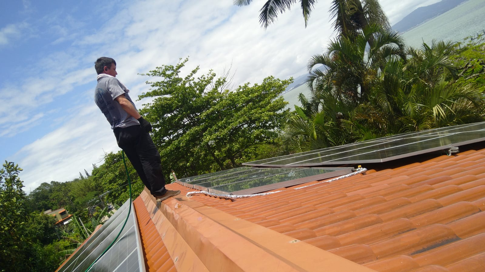
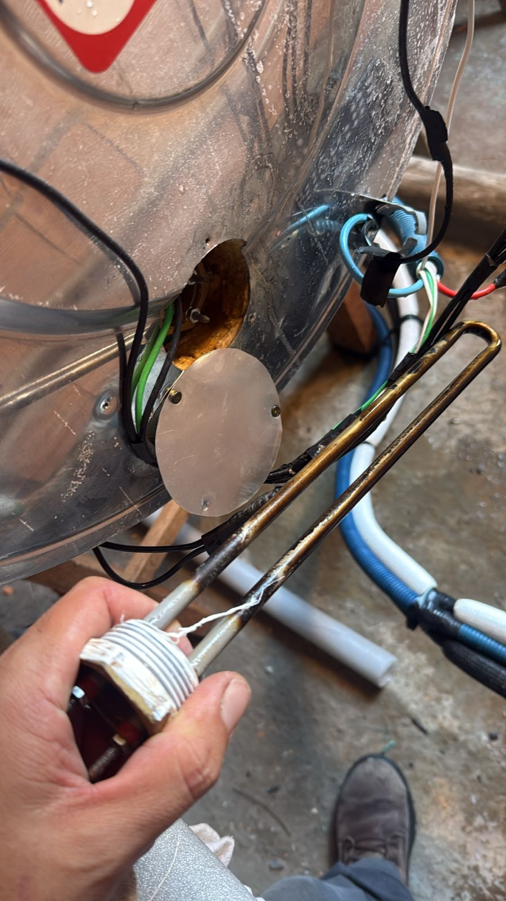
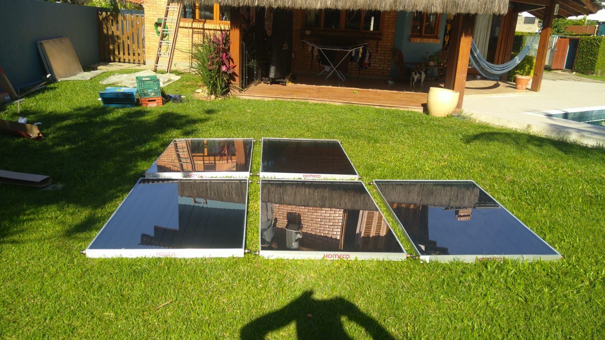
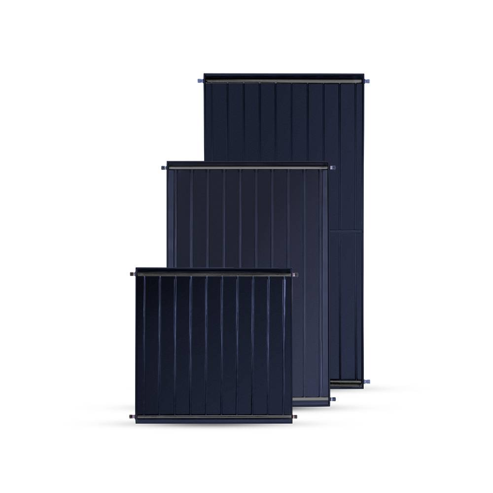
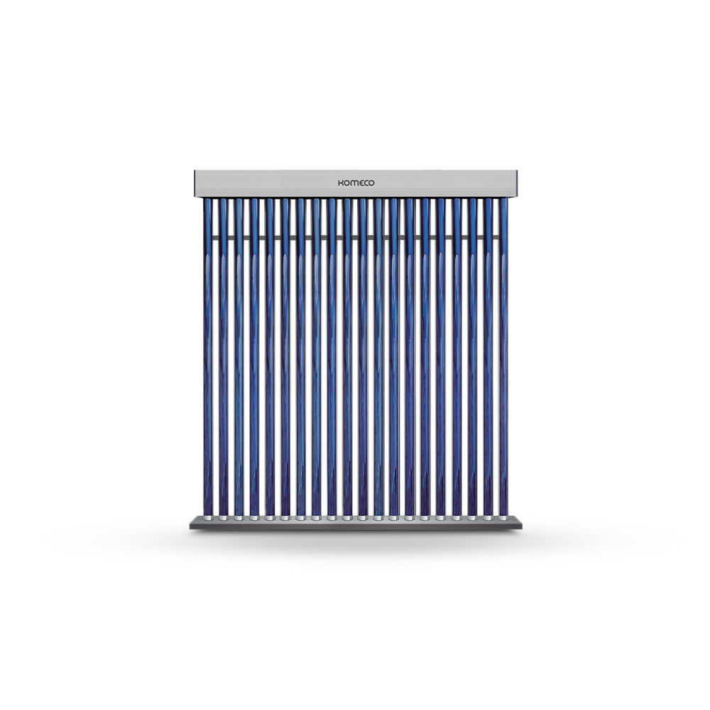
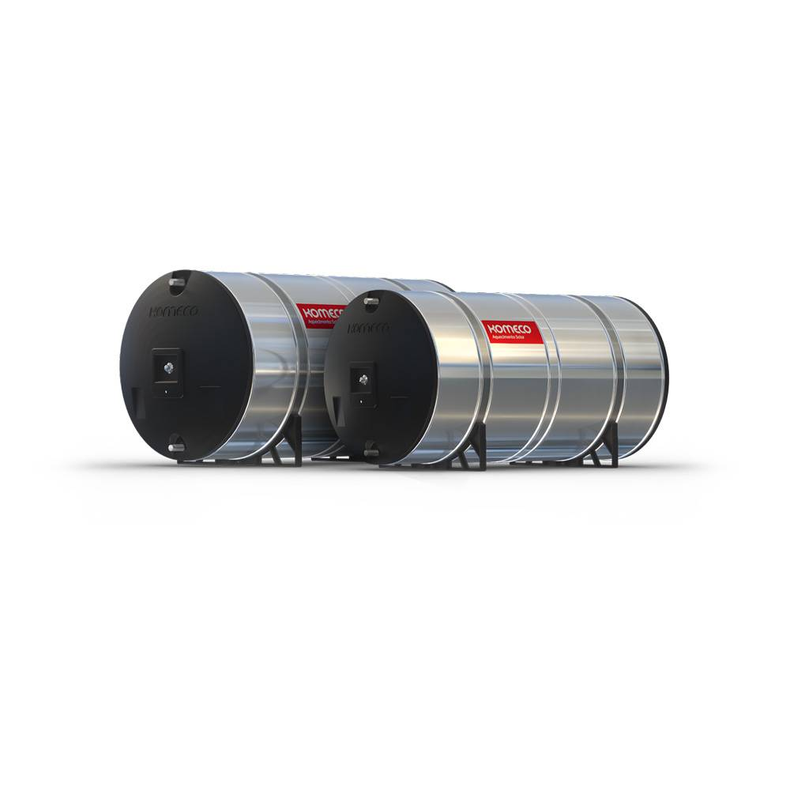

Resolva com Especialistas em Manutenção de Aquecimento Solar em Florianópolis
Manutenção, revisão preventiva, limpeza de boiler e placas solares com atendimento especializado, segurança e garantia.

O sistema de aquecimento solar é extremamente eficiente… mas sem manutenção preventiva ele começa a apresentar problemas como:
E o pior:
Muitos clientes só percebem o problema quando ficam sem água quente.
A Flex Clean ajuda você a manter o sistema funcionando com segurança, eficiência e economia.
Cuidamos da eficiência e da segurança do seu sistema solar.
O aquecimento solar é um investimento de longo prazo.
Quando bem cuidado, ele oferece:
Mas para isso, o sistema precisa de:
Há mais de 10 anos, a Flex Clean atende Florianópolis com manutenção especializada em sistemas de aquecimento solar.

Nossa equipe identifica rapidamente a causa do problema e realiza a solução correta.
O boiler é responsável por armazenar a água aquecida e precisa de cuidados específicos.
Realizamos:
A drenagem incorreta pode causar danos sérios ao reservatório.
Placas solares e tubos a vácuo acumulam sujeira ao longo do tempo, reduzindo o rendimento do sistema.
Benefícios da limpeza:
A manutenção ajuda a preservar a capacidade de absorção dos raios solares e reduzir o uso do sistema de apoio elétrico.
A revisão preventiva ajuda a evitar falhas inesperadas e custos maiores no futuro.
Inclui:




O aquecimento solar oferece:
Quando corretamente dimensionado e mantido, o sistema pode trazer excelente economia ao longo dos anos.
Muitas pessoas não sabem que:
Por isso a manutenção deve ser feita por profissionais especializados.
Na Flex Clean realizamos:

Sem manutenção, o sistema pode:
A revisão preventiva evita problemas maiores e mantém o desempenho ideal do sistema.
verifique se a empresa realmente entende de aquecimento solar.
Cada sistema possui:
A Flex Clean trabalha com:
Tudo com atendimento técnico especializado.
A Flex Clean oferece:
Tudo com acompanhamento profissional do início ao fim.
Fale com nossa equipe e agende a manutenção do seu sistema de aquecimento solar.
Sim. A manutenção periódica ajuda a manter a eficiência e segurança do sistema.
Todos os fabricantes recomendam que a manutenção preventiva seja realizada, no mínimo, uma vez por ano para garantir o bom funcionamento, a eficiência e a durabilidade do equipamento.
Sim. Realizamos limpeza e revisão dos coletores solares.
Sim. Atendemos ambos os sistemas.
Sim. Inclusive, erros de instalação ou a falta de manutenção podem causar o chamado "efeito sanfona", comprometendo a estrutura e podendo condenar o boiler. Quando manuseado incorretamente, o reservatório pode sofrer danos graves. Por isso, a manutenção deve ser realizada por um técnico especializado.
Sim, atendemos toda a ilha.